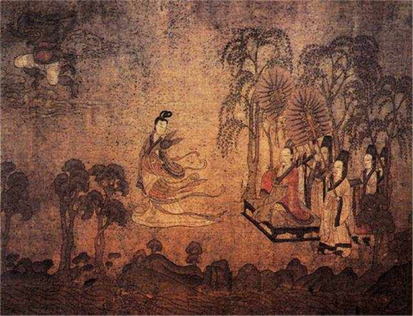

分类欣赏-《洛神赋图》
《洛神赋图》，北京故宫博物院馆藏珍品。绢本，设色，纵27.1cm，横572.8cm。原《洛神赋图》卷，东晋著名画家顾恺之绘制(宋摹)。
这幅画根据曹植著名的《洛神赋》而作，为顾恺之传世精品。这卷宋摹本在一定程度上保留了顾恺之艺术的若干特点，千载之下，亦可遥窥其笔墨神情。全卷分为三个部分，曲折细致而又层次分明地描绘着曹植与洛神真挚纯洁的爱情故事。人物安排疏密得宜，在不同的时空中自然地交替、重叠、交换，而在山川景物描绘上，无不展现一种空间美。
全画用笔细劲古朴，恰如“春蚕吐丝”。山川树石画法幼稚古朴，所谓“人大于山，水不容泛”，体现了早期山水画的特点。此图卷无论从内容、艺术结构、人物造形、环境描绘和笔墨表现的形式来看，都不愧为中国古典绘画中的瑰宝之一。